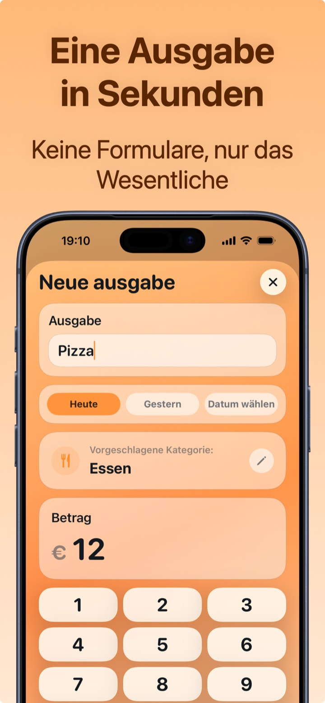
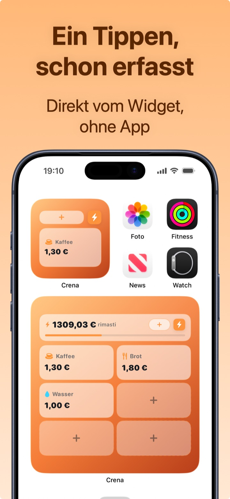
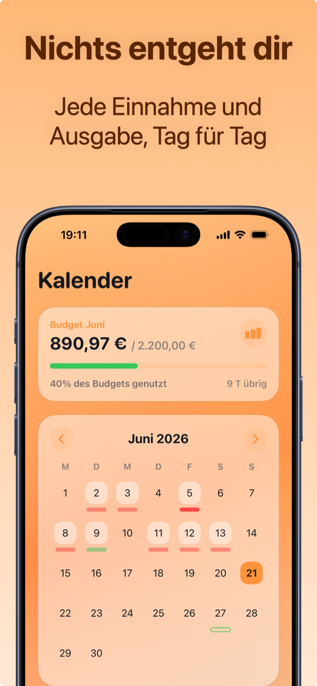
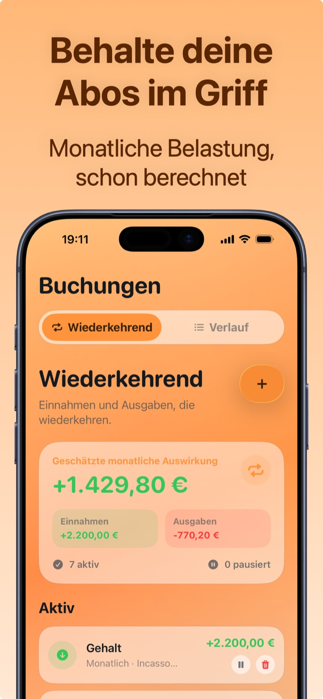
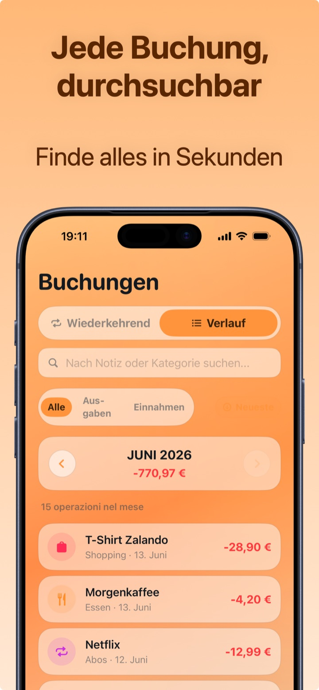
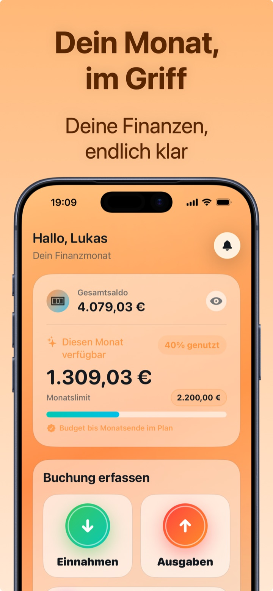

Screenshots
Deine Ausgaben auf einen Blick
Alles, was du für deine persönlichen Finanzen brauchst: Monatsbudget, Kategorien, Kalender, Abos und vollständiger Verlauf.






Crena ist die kostenlose iPhone-App, mit der du eine Ausgabe in zwei Sekunden erfasst, ein Monatsbudget führst und wirklich verstehst, wohin dein Geld geht. Keine Tabellen, kein Bankkonto zum Verknüpfen.
Kostenlos · Für iPhone · Deine Daten bleiben auf deinem Handy

Alles, was du für deine persönlichen Finanzen brauchst: Monatsbudget, Kategorien, Kalender, Abos und vollständiger Verlauf.





Crena ist für alle gemacht, die schon versucht haben, Ausgaben in Excel oder in Notizen festzuhalten — und nach einer Woche aufgegeben haben.
Name, Betrag, fertig: Die Kategorie wird automatisch vorgeschlagen. Häufige Ausgaben — Kaffee, Brot, Benzin — speicherst du mit einem Tipp über das Widget, ohne die App zu öffnen.
Entscheide, wie viel du im Monat ausgeben willst. Crena berechnet, was dir bleibt, den Tagesdurchschnitt und sagt dir, ob du bis Monatsende im Plan liegst — bevor es zu spät ist.
Statistiken nach Kategorie, Top-Ausgaben des Monats, Saldoverlauf und Tageskalender. Abos und wiederkehrende Zahlungen sind in der Monatsbelastung schon eingerechnet.
Ausgabenlimit, verfügbarer Betrag, Tagesdurchschnitt und Prognose bis Monatsende.
Jede Bewegung nach Kategorie geordnet, mit automatischem Vorschlag beim Eintippen der Ausgabe.
Ausgabendiagramme nach Kategorie, Vergleich Einnahmen/Ausgaben und Top 3 der Monatsausgaben.
Jede Einnahme und Ausgabe im Kalender: Sieh dir jeden Tag und seinen Nettosaldo an.
Netflix, Miete, Gehalt: erfassen sich von selbst, mit bereits berechneter Monatsbelastung.
Die täglichen Ausgaben mit einem einzigen Tipp vom Startbildschirm, ohne die App zu öffnen.
Keine Kontoverknüpfung, keine Registrierung: Deine Daten bleiben auf deinem iPhone.
Sichere deine Daten, wann du willst, und exportiere die Übersicht mit Premium.
Passe Aussehen und Währung an. Verfügbar auf Deutsch, Englisch, Italienisch, Französisch, Spanisch und Portugiesisch.
Konkrete Methoden zum Sparen, Budgetieren und Ausgaben-Tracken — mit den Schritten, um sie sofort in Crena umzusetzen.
Die Methode, die wirklich funktioniert (und warum Excel scheitert), Schritt für Schritt erklärt.
Ratgeber lesen → BudgetWie viel du ansetzt, wie du es überwachst und was du tust, wenn du es überziehst.
Ratgeber lesen → MethodeDie bekannteste Methode zur Gehaltsaufteilung, angewandt auf echte Zahlen.
Ratgeber lesen → Sparen7 praktische Schritte, die keinen totalen Verzicht verlangen.
Ratgeber lesen → FamilieEinnahmen, Ausgaben und Haushaltskosten an einem Ort organisiert.
Ratgeber lesen → AbosWas Netflix, Spotify und Co. dich jedes Jahr wirklich kosten.
Ratgeber lesen → GehaltDie 10-Minuten-Routine im Monat, mit der du nicht mehr vor dem Monatsende knapp bist.
Ratgeber lesen → PrivatsphäreWarum manuelles Tracking wirksamer (und privater) ist als Bank-Sync.
Ratgeber lesen → GrundlagenDer Ratgeber für alle, die bei null starten: Bewusstsein, Budget, Sparen.
Ratgeber lesen →Lade Crena kostenlos, lege dein Monatsbudget fest und erfasse deine erste Ausgabe in zwei Sekunden. Ohne Kreditkarte, ohne Registrierung.
Laden imApp Store